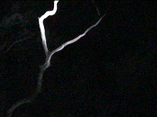

A story making the rounds in Wood County is that of Euler Road southwest of Bowling Green. Legend has it that the wooded north-south stretch of Euler Road between Wingston and Potter Roads is haunted by the ghost of a baby whose mother hung it from a tree branch. For this reason, the road is known as Crybaby Lane.
On July 28, 2000, I visited Bowling Green with Hoss and, through the use of my road atlas, located Euler Road. It's a pretty ordinary rural road most of the way, but the little north-south jog is a creepy stretch. The trees encroach and turn the road into a tunnel. It's pitch black. It was so dark, in fact, that the video I shot turned out pretty badly. I had to return a while later to take some daytime photos of the road itself. But you can still see some of the creepy overhanging branches in the captures we took from the video.

We parked and got out and paced up and down the road. It was dark and scary, but the barking of a dog in the yard of a house nearby dampened the feeling somewhat. We figured that the particularly jagged and bare branch overhead was probably the one from which the baby had been hung; it stands out among the greenery.
We tried to talk to the ghost; nothing happened. We did, however, hear some barely audible sounds in the woods, but that could easily have been an animal. After waiting around for a while, another car went by. We got back into my car and let off some fireworks, then took off. It seems likely that this story got started by Bowling Green students who discovered a creepy stretch of road out in the country and made up a story to go along with it. No matter what, we didn't see a ghost either time. Oh well.

Interestingly, the haunted stretch of Euler Road is just a stone's throw from the site of a famous destroyed haunted house: the Potter House. If you've had an experience here or at any other ghost-haunted place in our fair state, don't hesitate to drop me a line.
Back
forgottenohio@yahoo.com